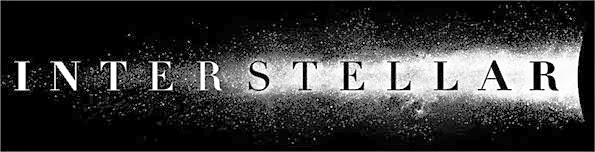
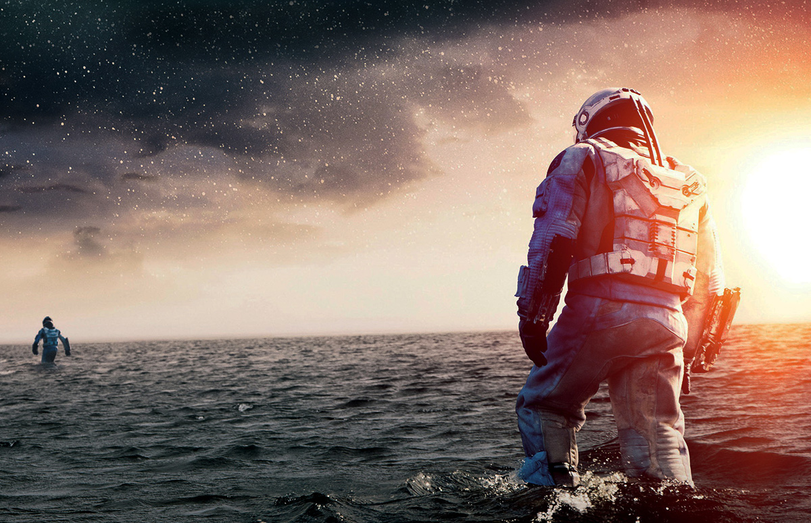

Interstellar (Interestelar, en Hispanoamérica) es una película épica de ciencia ficción estadounidense de 2014, dirigida por Christopher Nolan y protagonizada por Matthew McConaughey, Anne Hathaway, Jessica Chastain, Michael Caine y Matt Damon. Presenta a un equipo de astronautas que viajan a través de un agujero de gusano en busca de un nuevo hogar para la humanidad. Los hermanos Christopher y Jonathan Nolan escribieron el guion, que tuvo su origen en un borrador que Jonathan desarrolló en 2007. Christopher Nolan produjo la película junto a su esposa Emma Thomas mediante su compañía productora Syncopy, y con Lynda Obst a través de Lynda Obst Productions. El físico teórico Kip Thorne, cuyo trabajo inspiró la película, fue productor ejecutivo y participó como consultor científico. Warner Bros., Paramount Pictures y Legendary Pictures cofinanciaron la película. El director de fotografía Hoyte van Hoytema rodó la película en un formato anamórfico de 35 mm y en IMAX de 70 mm. La filmación comenzó a finales de 2013 en Alberta, en Islandia y en Los Ángeles. La película incluyó un uso extensivo de efectos especiales y de miniaturas, y Double Negative creó los efectos digitales adicionales. Interstellar se estrenó el 26 de octubre de 2014 en Los Ángeles. En América del Norte se lanzó en película fotográfica, expandiendo su disponibilidad a otros lugares usando proyectores digitales. La película tuvo éxito en la taquilla, con un ingreso mundial de más de 675 millones de dólares, y recibió reseñas positivas de los críticos, quienes elogiaron la precisión científica, la temática de ciencia ficción, la banda sonora, los efectos visuales y las actuaciones de McConaughey, Hathaway, Chastain y Mackenzie Foy. En los Premios de la Academia de 2014, la película ganó el Óscar a los mejores efectos visuales, y fue nominada por mejor banda sonora, mejor sonido y mejor diseño de producción. Recibió también varios premios y nominaciones, en particular p
Sinopsis
Gracias a un descubrimiento, un grupo de científicos y exploradores, encabezados por Cooper, se embarcan en un viaje espacial para encontrar un lugar con las condiciones necesarias para reemplazar a la Tierra y comenzar una nueva vida allí.